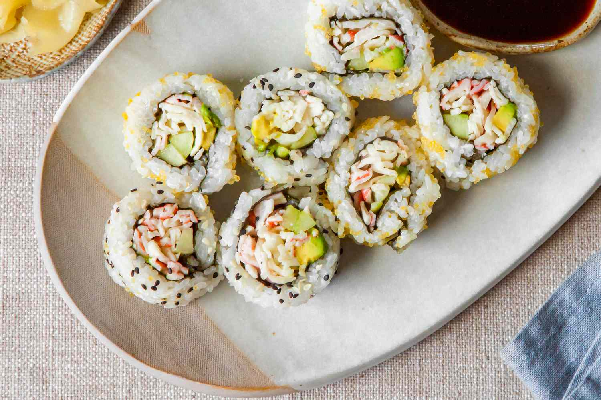

California Roll

Smang on these tasty rolls any time you want, without the typical cost associated with sushi
The humble California roll is a perfect example of a dish that is more than the sum of it's parts. Easy to enjoy, and only a tad difficult to make, it is sure to please the pallette and is satisfying to construct.
For anybody wanting to dip their toes into the intimidating world of sushicraft, the California roll is a welcoming entry point because of its easy to find ingredients and lack of raw fish, which can make some people squeemish.
Ingredients
- Sushi rice - 1 Cup
- Mirin - 2 Tbsp.
- Toasted nori (seaweed) sheets
- Imitation crab stick, fully cooked - 1 10oz. pack
- Ripe avocado - 1
- Cucumber
Instructions
- Make sushi rice (recipe in link) and allow rice to cool to room temperature. Note: if you try to build your rolls with steaming rice, the nori will get soggy and chewy.
- Cut the imitation crab, cucumber, and avocado into long pieces.
- Gather sushi rolling equipment and construct the rolls.